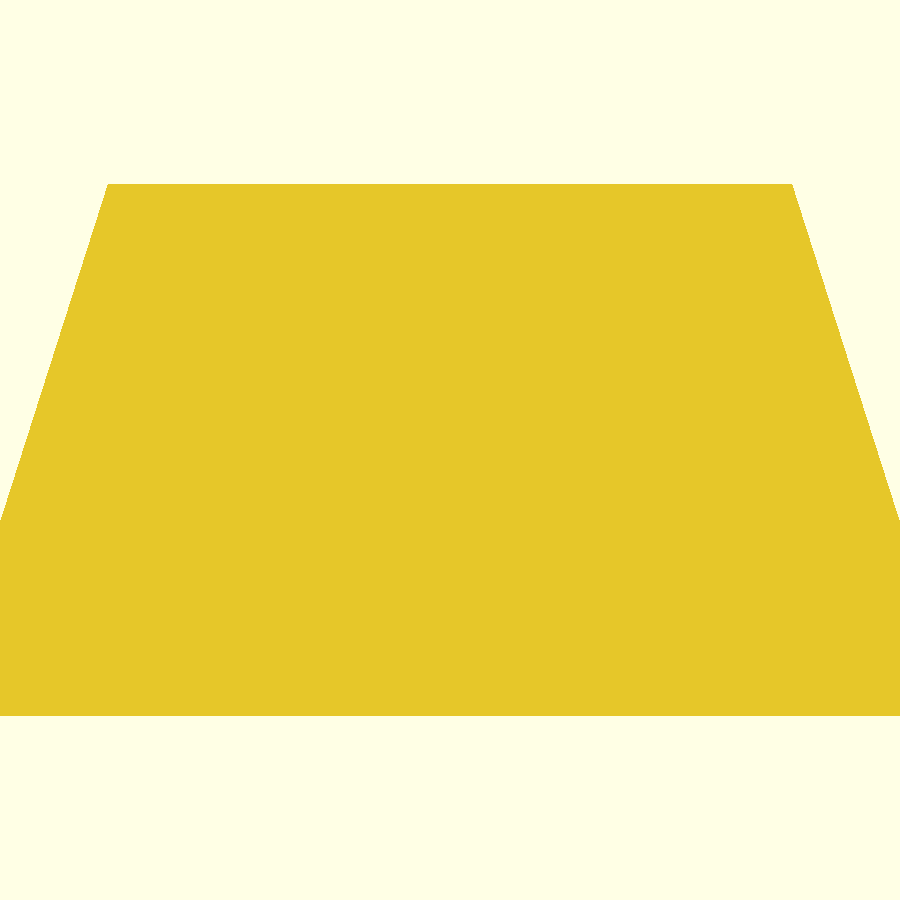
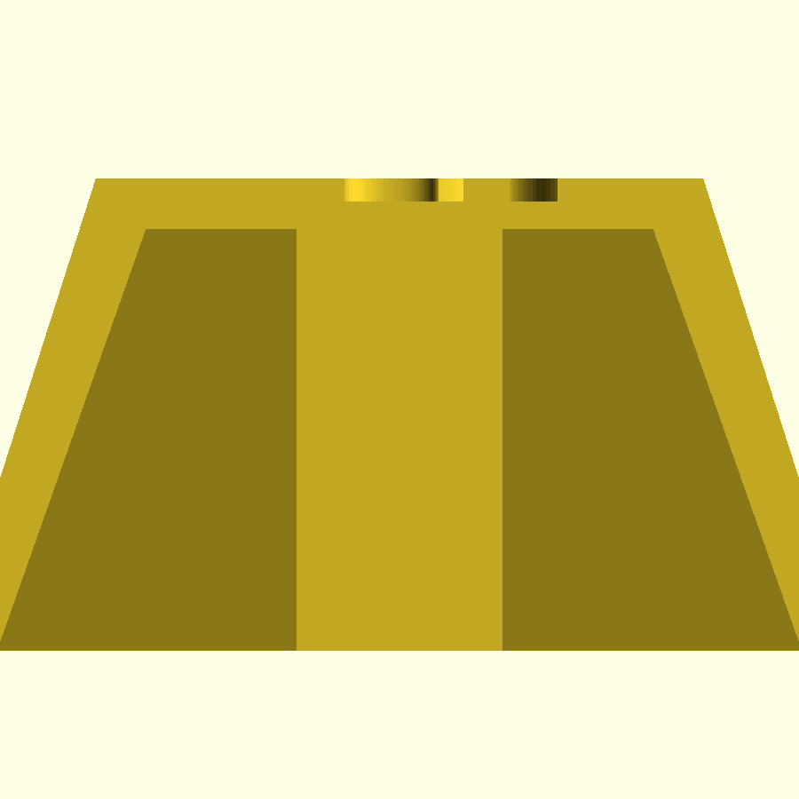

Cherry MX 호환 · 1u Row-1 · 평평한 윗면 · Hollow · Lost-Wax 캐스팅


| 항목 | 설계값 | Cast STL (1.8%↑) | 비고 |
|---|---|---|---|
| 가로 (X) | 18.10 mm | 18.43 mm | 1u 표준 키 피치 19.05 − gap 0.95 |
| 세로 (Y) | 18.10 mm | 18.43 mm | 1u 표준 |
| 높이 (Z) | 9.40 mm | 9.57 mm | Cherry profile R1 (F-row 매칭) |
| 윗면 사이즈 | 12.10 × 12.10 mm | 12.32 × 12.32 mm | top inset 3.0 mm |
| 측면·천장 벽 두께 | 1.00 mm | 1.02 mm | 전체 균일 |
| 각인 "ESC" | 4.5 mm font, 0.45 mm 깊이 | − | Helvetica Bold, 음각 |
| MX 십자 슬롯 (장) | 4.10 mm | 4.17 mm | Cherry MX stem 4.0 mm + 여유 0.10 |
| MX 십자 슬롯 (단) | 1.27 mm | 1.29 mm | MX stem 1.17 mm + 여유 0.10 |
| 십자 슬롯 깊이 | ~5.5 mm | ~5.6 mm | 천장 wall까지 (0.4 mm 캡 잔류) |
| Stem boss 외곽 (장) | 4.10 mm | 4.17 mm | + 4-pillar 구조 |
| Stem boss 외곽 (단) | 2.67 mm | 2.72 mm | 슬롯 양옆 wall 0.70 mm |
| 바닥 | 개방 | 개방 | 왁스 배출 가능 |
ESC_1u_flat_hollow_1.0mm_cast.stl (수축 보정본)